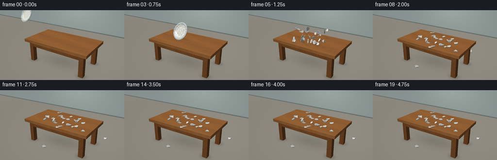
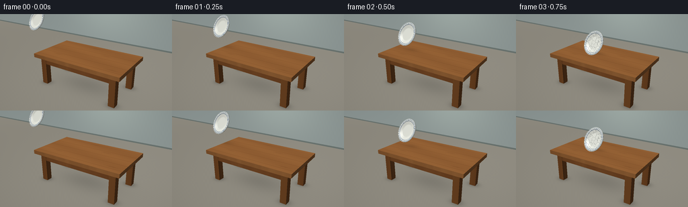

CODING AGENTS AS PIXEL WORLD MODELS
traex/GPT-6.1-Sol · phygen_135
点击播放 · 原生 RGB 像素
逐轮保存的候选
回放视频、检查图与代码变化。
每份候选均可单独播放。实际图片检查记录在下方工具轨迹中。
候选 01播放与检查图
点击播放 · 原生 RGB 像素


展开代码变化
--- 上一保存版本
+++ 本次保存版本
@@ -0,0 +1,348 @@
+"""Procedural RGB animation: thin porcelain shatters against solid oak.
+Uses only NumPy/Pillow and a small custom triangle rasterizer.
+"""
+from pathlib import Path
+import math
+import numpy as np
+from PIL import Image, ImageFilter
+import artifact_io
+
+ROOT=Path(__file__).resolve().parent
+W,H=256,144
+SS=3
+SW,SH=W*SS,H*SS
+rng=np.random.default_rng(135)
+CAM=np.array([5.8,-8.8,6.0]); TARGET=np.array([-.1,0,1.4])
+F=TARGET-CAM; F/=np.linalg.norm(F)
+R=np.cross(F,[0,0,1]);R/=np.linalg.norm(R)
+UP=np.cross(R,F)
+FOCAL=310*SS
+LIGHT=np.array([-3.5,-4.0,8.0]); LD=np.array([-.4,-.5,.76]);LD/=np.linalg.norm(LD)
+RAD=.68; TOP=1.85; IMPACT=.75
+N=np.array([-.17,-.86,.48]);N/=np.linalg.norm(N)
+U=np.cross([0,0,1],N); U/=np.linalg.norm(U)
+V=np.cross(N,U)
+B=np.column_stack([U,V,N])
+# Minimum rim height determines an exact contact with the tabletop.
+IMPACT_POS=np.array([-.60,-.10,TOP+RAD*np.sqrt(U[2]**2+V[2]**2)+.022])
+
+def project(p):
+ a=np.asarray(p)-CAM
+ d=a@F
+ return np.stack([SW/2+FOCAL*(a@R)/d,SH/2-FOCAL*(a@UP)/d,d],axis=-1)
+
+def rotation(w):
+ a=np.linalg.norm(w)
+ if a<1e-12:return np.eye(3)
+ x,y,z=w/a;c=np.cos(a);s=np.sin(a);q=1-c
+ return np.array([[c+x*x*q,x*y*q-z*s,x*z*q+y*s],[y*x*q+z*s,c+y*y*q,y*z*q-x*s],[z*x*q-y*s,z*y*q+x*s,c+z*z*q]])
+
+def profile(xy):
+ r=np.linalg.norm(xy,axis=-1)/RAD
+ return -.062*(1-np.clip((r-.53)/.34,0,1))+.008*np.exp(-((r-.91)/.08)**2)
+
+def normals(xy):
+ eps=.0005
+ dx=(profile(xy+np.array([eps,0]))-profile(xy-np.array([eps,0])))/(2*eps)
+ dy=(profile(xy+np.array([0,eps]))-profile(xy-np.array([0,eps])))/(2*eps)
+ ns=np.stack([-dx,-dy,np.ones_like(dx)],axis=-1)
+ return ns/np.linalg.norm(ns,axis=-1,keepdims=True)
+
+class Renderer:
+ def __init__(self):
+ yy,xx=np.mgrid[0:SH,0:SW]
+ # A softly lit gray plaster room, with an uninterrupted floor.
+ glow=np.exp(-((xx-SW*.28)**2/(SW*.8)**2+(yy-SH*.1)**2/(SH*.8)**2))
+ self.im=np.stack([123+24*glow,130+23*glow,130+19*glow],axis=-1).astype(float)
+ self.z=np.full((SH,SW),1.e8)
+ def tri(self,vs,base,mat='plain',uv=None,ns=None):
+ vs=np.asarray(vs,dtype=float);p=project(vs)
+ if np.min(p[:,2])<=0:return
+ x0=max(0,int(np.floor(p[:,0].min())));x1=min(SW-1,int(np.ceil(p[:,0].max())))
+ y0=max(0,int(np.floor(p[:,1].min())));y1=min(SH-1,int(np.ceil(p[:,1].max())))
+ if x1<x0 or y1<y0:return
+ x,y=np.meshgrid(np.arange(x0,x1+1)+.5,np.arange(y0,y1+1)+.5)
+ a,b,c=p
+ den=(b[1]-c[1])*(a[0]-c[0])+(c[0]-b[0])*(a[1]-c[1])
+ if abs(den)<1e-8:return
+ w0=((b[1]-c[1])*(x-c[0])+(c[0]-b[0])*(y-c[1]))/den
+ w1=((c[1]-a[1])*(x-c[0])+(a[0]-c[0])*(y-c[1]))/den
+ w2=1-w0-w1
+ inv=w0/a[2]+w1/b[2]+w2/c[2];depth=1/np.maximum(inv,1e-9)
+ mask=(w0>=-1e-7)&(w1>=-1e-7)&(w2>=-1e-7)&(depth<self.z[y0:y1+1,x0:x1+1])
+ if not np.any(mask):return
+ ww=np.stack([w0/a[2],w1/b[2],w2/c[2]],axis=-1)/inv[...,None]
+ world=ww@vs
+ norm=np.cross(vs[1]-vs[0],vs[2]-vs[0]);norm/=max(np.linalg.norm(norm),1.e-12)
+ if ns is not None:
+ norm=ww@ns;norm/=np.maximum(np.linalg.norm(norm,axis=-1,keepdims=True),1e-8)
+ # Double-sided thin ceramic; wooden geometry has outward normals.
+ if mat.startswith('ceramic'):
+ toward=CAM-world
+ if ns is None:
+ if np.dot(norm,CAM-vs.mean(0))<0:norm=-norm
+ else:
+ norm=np.where((np.sum(norm*toward,axis=-1)<0)[...,None],-norm,norm)
+ diffuse=np.maximum(np.sum(norm*LD,axis=-1),0)
+ shade=.43+.57*diffuse
+ col=np.empty(world.shape);col[:]=base
+ if mat=='wood':
+ xxw=world[...,0];yw=world[...,1];zw=world[...,2]
+ warp=yw+.016*np.sin(xxw*2.1)+.007*np.sin(xxw*6+yw*3)
+ grain=np.sin(warp*102+np.sin(xxw*4.1)*.65)+.46*np.sin(warp*249+xxw*.7)+.19*np.sin(warp*535+xxw*2)
+ fine=np.sin(xxw*59+yw*282)*np.sin(xxw*139-yw*162)
+ tone=grain*3.6+fine*1.05+4*np.sin(yw*4+xxw*.8)
+ # Dark, gently eccentric oak knots, stretched along the grain.
+ for kx,ky in [(-1.45,-.73),(.95,.4),(2.,-.98),(-.12,1.12)]:
+ rr=np.sqrt(((xxw-kx)/.31)**2+((yw-ky)/.06)**2)
+ tone-=9*np.exp(-rr*rr*1.4)
+ tone+=np.sin(rr*12)*2*np.exp(-rr*.8)
+ col+=tone[...,None]*np.array([1,.79,.49])
+ seam=np.abs((yw+1.45)%(.58)-.29)
+ col-=np.exp(-(seam/.009)**2)[...,None]*np.array([23,19,13])
+ elif mat.startswith('ceramic'):
+ xy=ww@np.asarray(uv);rad=np.linalg.norm(xy,axis=-1)/RAD
+ theta=np.arctan2(xy[...,1],xy[...,0])
+ if mat=='ceramic':
+ # Two fine cobalt lines plus restrained small rim flourishes.
+ blue=(np.abs(rad-.944)<.009)|(np.abs(rad-.823)<.009)
+ petals=(rad>.852)&(rad<.911)&(np.cos(theta*30)>.84)&(np.abs(rad-(.882+.01*np.cos(theta*60)))<.012)
+ col[blue|petals]=[34,66,114]
+ else:
+ col[:]=[216,218,208]
+ view=CAM-world;view/=np.linalg.norm(view,axis=-1,keepdims=True)
+ half=view+LD;half/=np.linalg.norm(half,axis=-1,keepdims=True)
+ spec=np.maximum(np.sum(norm*half,axis=-1),0)**70
+ col=col*shade[...,None]+spec[...,None]*52
+ shade=1
+ elif mat=='floor':
+ wav=np.sin(world[...,0]*5+world[...,1]*.5)*.6+np.sin(world[...,1]*40)*.25
+ col+=wav[...,None]
+ elif mat=='wall':
+ tex=np.sin(world[...,0]*73+world[...,2]*71)*np.sin(world[...,2]*93)*.65
+ col+=tex[...,None]
+ col=np.clip(col*np.asarray(shade)[...,None] if np.ndim(shade) else col*shade,0,255)
+ sub=self.im[y0:y1+1,x0:x1+1];sub[mask]=col[mask]
+ self.z[y0:y1+1,x0:x1+1][mask]=depth[mask]
+ def quad(self,vs,color,mat='plain'):
+ for inds in [[0,1,2],[0,2,3]]:self.tri(np.asarray(vs)[inds],color,mat)
+ def box(self,lo,hi,color,mat='wood'):
+ x0,y0,z0=lo;x1,y1,z1=hi
+ self.quad([[x0,y0,z1],[x1,y0,z1],[x1,y1,z1],[x0,y1,z1]],color,mat)
+ self.quad([[x0,y0,z0],[x1,y0,z0],[x1,y0,z1],[x0,y0,z1]],color,mat)
+ self.quad([[x1,y0,z0],[x1,y1,z0],[x1,y1,z1],[x1,y0,z1]],color,mat)
+ self.quad([[x1,y1,z0],[x0,y1,z0],[x0,y1,z1],[x1,y1,z1]],color,mat)
+ self.quad([[x0,y1,z0],[x0,y0,z0],[x0,y0,z1],[x0,y1,z1]],color,mat)
+ def shadow(self,center,rx,ry,alpha=.15,plane=TOP+.001):
+ # Gaussian contact shadows rasterized in their world plane.
+ p=project(np.array([[center[0]-rx*3,center[1]-ry*3,plane],[center[0]+rx*3,center[1]+ry*3,plane]]))
+ # Use the full projected ellipse polygon's bounding box.
+ ang=np.linspace(0,2*np.pi,48)
+ pts=project(np.column_stack([center[0]+3*rx*np.cos(ang),center[1]+3*ry*np.sin(ang),np.full(48,plane)]))
+ x0=max(0,int(pts[:,0].min()));x1=min(SW-1,int(pts[:,0].max()+1))
+ y0=max(0,int(pts[:,1].min()));y1=min(SH-1,int(pts[:,1].max()+1))
+ if x1<x0 or y1<y0:return
+ yy,xx=np.mgrid[y0:y1+1,x0:x1+1]
+ ray=F[None,None,:]+((xx+.5-SW/2)/FOCAL)[...,None]*R-((yy+.5-SH/2)/FOCAL)[...,None]*UP
+ tt=(plane-CAM[2])/ray[...,2];pos=CAM+tt[...,None]*ray
+ rr=((pos[...,0]-center[0])/rx)**2+((pos[...,1]-center[1])/ry)**2
+ dep=tt
+ valid=(np.abs(self.z[y0:y1+1,x0:x1+1]-dep)<.06)
+ self.im[y0:y1+1,x0:x1+1]*=(1-alpha*np.exp(-rr*1.6)*valid)[...,None]
+ def finish(self):
+ yy,xx=np.mgrid[0:SH,0:SW]
+ vign=1-.105*((xx/SW-.48)**2+(yy/SH-.47)**2)
+ im=np.uint8(np.clip(self.im*vign[...,None],0,255))
+ return np.asarray(Image.fromarray(im).resize((W,H),Image.Resampling.LANCZOS))
+
+def scene():
+ r=Renderer()
+ yy,xx=np.mgrid[0:SH,0:SW]
+ rays=F+((xx+.5-SW/2)/FOCAL)[...,None]*R-((yy+.5-SH/2)/FOCAL)[...,None]*UP
+ tf=-CAM[2]/rays[...,2];tw=(8-CAM[1])/rays[...,1]
+ ground=(tf>0)&(tf<tw)
+ depth=np.where(ground,tf,tw)
+ world=CAM+rays*depth[...,None]
+ window=np.exp(-((world[...,0]+3)**2/18+(world[...,2]-3.5)**2/9))
+ wall=np.array([139,149,147])+window[...,None]*np.array([21,23,20])
+ floor=np.array([145,141,130])+4*np.sin(world[...,0]*.18)[...,None]
+ texture=np.sin(world[...,0]*59+world[...,1]*53)*.38
+ r.im=np.where(ground[...,None],floor,wall)+texture[...,None]
+ r.z=depth
+ # Subtle baseboard along the back wall.
+ base=(~ground)&(world[...,2]<.13)
+ r.im[base]=[105,115,111]
+ # Grounded four-legged substantial oak table, with visible joinery.
+ for x in [-2.15,2.15]:
+ for y in [-1.04,1.04]:r.shadow([x,y,0],.4,.33,.24,plane=.005)
+ r.shadow([0,0,0],2.2,1.2,.12,plane=.005)
+ for x in [-2.15,2.15]:
+ for y in [-1.04,1.04]:
+ r.box([x-.17,y-.17,.02],[x+.17,y+.17,1.64],[133,82,41])
+ r.box([-2.28,-1.19,1.26],[2.28,-1.03,1.65],[137,84,43])
+ r.box([-2.28,1.03,1.26],[2.28,1.19,1.65],[130,79,39])
+ r.box([-2.30,-1.03,1.26],[-2.12,1.03,1.65],[131,80,39])
+ r.box([2.12,-1.03,1.26],[2.30,1.03,1.65],[141,88,45])
+ r.box([-2.6,-1.45,1.64],[2.6,1.45,TOP],[167,109,59])
+ # Fine bevel bands on the edge catch the window light.
+ r.box([-2.6,-1.45,1.81],[2.6,1.45,1.845],[175,115,62])
+ return r
+
+# Construct irregular fracture cells in plate coordinates, deterministically.
+angles=np.linspace(0,2*np.pi,84,endpoint=False)
+circle=RAD*np.column_stack([np.cos(angles),np.sin(angles)])
+seeds=[np.array([-.12,-.31]),np.array([.08,-.42])]
+while len(seeds)<29:
+ q=rng.uniform(-RAD,RAD,2)
+ if np.linalg.norm(q)<RAD*.96 and min(np.linalg.norm(q-s) for s in seeds)>.115:seeds.append(q)
+
+def clip(poly,n,d):
+ out=[]
+ for a,b in zip(poly,np.roll(poly,-1,axis=0)):
+ aa=a@n-d;bb=b@n-d
+ if aa<=1e-10:out.append(a)
+ if (aa<=0)!=(bb<=0):out.append(a+(b-a)*aa/(aa-bb))
+ return np.array(out)
+
+pieces=[]
+for i,s in enumerate(seeds):
+ poly=circle.copy()
+ for j,t in enumerate(seeds):
+ if i!=j:poly=clip(poly,t-s,(t@t-s@s)/2)
+ # Subdivision follows gentle bowl curvature and leaves sharp fracture sides.
+ pts=[]
+ for a,b in zip(poly,np.roll(poly,-1,axis=0)):
+ div=max(1,int(np.linalg.norm(b-a)/.075))
+ for k in range(div):pts.append(a+(b-a)*k/div)
+ poly=np.array(pts);cent=poly.mean(0);zc=profile(cent)
+ xy=np.vstack([cent,poly]);local=np.column_stack([xy-cent,profile(xy)-zc])
+ back=local.copy();back[:,2]-=.027
+ ns=normals(xy)
+ tri=[]
+ for k in range(len(poly)):
+ a=k+1;b=(k+1)%len(poly)+1
+ tri.append((np.array([0,a,b]),'ceramic'))
+ pos=IMPACT_POS+B@np.r_[cent,zc]
+ direction=cent/max(np.linalg.norm(cent),.15)
+ vel=np.array([1.3+direction[0]*.95+rng.normal(0,.5), direction[1]*1.0+rng.normal(0,.65),.6+rng.uniform(.15,1.5)])
+ # Contact fragments receive more outward impulse than the upper bowl.
+ vel[2]+=.5*(1-cent[1]/RAD)
+ omega=rng.normal(0,5,3)
+ target=rotation(np.array([0,0,rng.uniform(-np.pi,np.pi)]))
+ if rng.random()<.3:target=target@np.diag([1,-1,-1])
+ pieces.append(dict(poly=poly,xy=xy,local=local,back=back,ns=ns,tris=tri,pos=pos,vel=vel,orient=B.copy(),omega=omega,settle=0.,target=target))
+
+# Extra small white chips stay visually subordinate to the larger broken dish.
+for k in range(12):
+ s=np.array([rng.uniform(-.25,.25),rng.uniform(-.58,-.18)])
+ pts=rng.uniform(-.035,.035,(3,2));local=np.column_stack([pts,np.zeros(3)])
+ pos=IMPACT_POS+B@np.r_[s,profile(s)]
+ pieces.append(dict(poly=pts,xy=pts+s,local=local,back=local-np.array([0,0,.017]),ns=np.tile([0,0,1],(3,1)),tris=[(np.array([0,1,2]),'ceramic')],pos=pos,vel=np.array([rng.uniform(-1.2,3.4),rng.uniform(-2,2),rng.uniform(.4,2.8)]),orient=B.copy(),omega=rng.normal(0,10,3),settle=0.,target=rotation(np.array([0,0,rng.uniform(-3,3)]))))
+
+def evolve(dt):
+ for p in pieces:
+ if p['settle']>=1:continue
+ p['vel'][2]-=9.81*dt
+ p['pos']+=p['vel']*dt
+ if p['settle']>0:
+ p['settle']=min(1,p['settle']+dt*5)
+ # Orthonormalized interpolation, so even settling pieces remain rigid.
+ m=p['orient']*(1-dt*20)+p['target']*(dt*20)
+ a,_,b=np.linalg.svd(m);p['orient']=a@b
+ else:p['orient']=rotation(p['omega']*dt)@p['orient']
+ verts=np.vstack([p['local'],p['back']])@p['orient'].T+p['pos']
+ minz=verts[:,2].min()
+ ontable=(abs(p['pos'][0])<2.57 and abs(p['pos'][1])<1.42)
+ floor=TOP+.004 if ontable else .008
+ if minz<floor:
+ p['pos'][2]+=floor-minz
+ speed=abs(p['vel'][2]);p['vel'][2]=speed*.23
+ p['vel'][:2]*=.66;p['omega']*=.52
+ if speed<1.5 or p['settle']>0:
+ p['settle']=max(.001,p['settle']);p['vel']*=.7
+ if p['settle']>=1:
+ p['orient']=p['target'];p['vel'][:]=0
+ zz=(np.vstack([p['local'],p['back']])@p['orient'].T)[:,2].min()
+ p['pos'][2]=floor-zz
+
+# Intact thin dish, with a contoured rim and a subtle foot ring on the reverse.
+def intact(r,pos,orient,cracked=False):
+ radii=[0,.25,.50,.57,.63,.70,.77,.82,.845,.89,.93,.955,.98,1]
+ n=112
+ ang=np.linspace(0,2*np.pi,n,endpoint=False)
+ xy=np.array([RAD*rr*np.column_stack([np.cos(ang),np.sin(ang)]) for rr in radii])
+ xyz=np.concatenate([xy,profile(xy)[...,None]],axis=-1)
+ world=xyz@orient.T+pos
+ ns=normals(xy)@orient.T
+ for j in range(len(radii)-1):
+ for k in range(n):
+ k2=(k+1)%n
+ for ij in [[(j,k),(j+1,k),(j+1,k2)],[(j,k),(j+1,k2),(j,k2)]]:
+ vs=np.array([world[a,b] for a,b in ij]);uv=np.array([xy[a,b] for a,b in ij]);nn=np.array([ns[a,b] for a,b in ij])
+ r.tri(vs,[237,239,229],'ceramic',uv,nn)
+ edge=world[-1];back=edge-orient[:,2]*.027
+ for k in range(n):
+ k2=(k+1)%n
+ r.quad([edge[k],back[k],back[k2],edge[k2]],[205,210,204])
+ if cracked:
+ # Hairline fracture branches are only visible at the contact frame.
+ for p in pieces[:29]:
+ poly=p['poly']
+ for a,b in zip(poly,np.roll(poly,-1,axis=0)):
+ mid=(a+b)/2
+ if np.linalg.norm(mid)>.61:continue
+ d=b-a;perp=np.array([-d[1],d[0]]);perp=perp/max(np.linalg.norm(perp),1e-6)*.0026
+ uv=np.array([a-perp,b-perp,b+perp,a+perp])
+ vv=np.column_stack([uv,profile(uv)+.0015])@orient.T+pos
+ r.quad(vv,[96,101,99])
+
+def drawpiece(r,p):
+ local=p['local'];back=p['back'];world=local@p['orient'].T+p['pos'];wb=back@p['orient'].T+p['pos']
+ ns=p['ns']@p['orient'].T
+ for ids,mat in p['tris']:
+ r.tri(world[ids],[237,239,230],mat,p['xy'][ids],ns[ids])
+ r.tri(wb[ids[::-1]],[218,220,210],'ceramic_back',p['xy'][ids[::-1]],-ns[ids[::-1]])
+ start=1 if len(local)>3 else 0
+ n=len(local)-start
+ for i in range(n):
+ a=i+start;b=(i+1)%n+start
+ r.quad([world[a],wb[a],wb[b],world[b]],[199,202,194])
+
+def main():
+ frames=[];simtime=0
+ for f in range(20):
+ t=f/4
+ r=scene()
+ if t<=IMPACT:
+ u=t/IMPACT
+ pos=IMPACT_POS+np.array([-3.1*(1-u),.07*(1-u),.9*(1-u)+.14*u*(1-u)])
+ orient=B@rotation(np.array([0,0,-.17*(1-u)]))
+ height=pos[2]-TOP
+ r.shadow([pos[0]+.2,pos[1]+.16,TOP],.46+height*.12,.19+height*.15,.14/(1+height),plane=TOP+.003)
+ intact(r,pos,orient,cracked=(f==3))
+ else:
+ target=t-IMPACT
+ while simtime<target-1e-7:
+ dt=min(.006,target-simtime);evolve(dt);simtime+=dt
+ for p in pieces:
+ ontable=abs(p['pos'][0])<2.6 and abs(p['pos'][1])<1.45
+ floor=TOP if ontable else 0
+ h=max(0,p['pos'][2]-floor)
+ size=max(.065,np.ptp(p['local'][:,0])*.5)
+ r.shadow(p['pos'],size+.13*h,size*.55+.1*h,.19/(1+2*h),plane=floor+.003)
+ for p in sorted(pieces,key=lambda p:-np.linalg.norm(p['pos']-CAM)):drawpiece(r,p)
+ # A few airborne porcelain dust specks immediately after impact.
+ if target<.65:
+ for k in range(16):
+ rr=np.random.default_rng(k+551)
+ v=rr.uniform([-1.5,-1.5,.5],[3,1.5,2.5])
+ pos=IMPACT_POS+np.array([0,0,-.4])+v*target+np.array([0,0,-4.9*target*target])
+ size=.006*(1-target/.8)
+ r.tri([pos,pos+U*size,pos+V*size],[222,224,216])
+ frames.append(r.finish())
+ print(f'Frame {f+1}/20 rendered',flush=True)
+ frames=np.stack(frames).astype(np.uint8)
+ artifact_io.save(frames,ROOT)
+ print('Saved RGB video artifacts.',flush=True)
+
+if __name__=='__main__':main()
可观测工具轨迹
实际执行的命令与返回图片。
命令 1exit 0
/bin/bash -lc "ls -la && cat prompt.txt && printf '\\n---RULES---\\n' && cat GENERATION_RULES.md && printf '\\n---SPEC---\\n' && cat task_spec.json"
命令 2exit 0
/bin/bash -lc "cat artifact_io.py && python - <<'PY'
import numpy,PIL
print('numpy',numpy.__version__)
PY"命令 3exit 0
/bin/bash -lc "python - <<'PY' import numpy as np C=np.array([5.5,-8.5,5.9]);T=np.array([0,0,1.5]); F=(T-C);F/=np.linalg.norm(F);R=np.cross(F,[0,0,1]);R/=np.linalg.norm(R);U=np.cross(R,F) for p in [[-3.8,-.3,3.2],[-.5,-.3,2.37],[0,0,1.8],[-2.1,-1.2,1.8],[2.1,-1.2,1.8],[-2.1,1.2,1.8],[2.1,1.2,1.8]]: a=np.array(p)-C print(p,[128+280*a@R/(a@F),72-280*a@U/(a@F)]) PY"
命令 4exit 1
/bin/bash -lc "cat > generate.py <<'PY'
\"\"\"Procedural RGB animation: thin porcelain shatters against solid oak.
Uses only NumPy/Pillow and a small custom triangle rasterizer.
\"\"\"
from pathlib import Path
import math
import numpy as np
from PIL import Image, ImageFilter
import artifact_io
ROOT=Path(__file__).resolve().parent
W,H=256,144
SS=3
SW,SH=W*SS,H*SS
rng=np.random.default_rng(135)
CAM=np.array([5.8,-8.8,6.0]); TARGET=np.array([-.1,0,1.4])
F=TARGET-CAM; F/=np.linalg.norm(F)
R=np.cross(F,[0,0,1]);R/=np.linalg.norm(R)
UP=np.cross(R,F)
FOCAL=310*SS
LIGHT=np.array([-3.5,-4.0,8.0]); LD=np.array([-.4,-.5,.76]);LD/=np.linalg.norm(LD)
RAD=.68; TOP=1.85; IMPACT=.75
N=np.array([-.17,-.86,.48]);N/=np.linalg.norm(N)
U=np.cross([0,0,1],N); U/=np.linalg.norm(U)
V=np.cross(N,U)
B=np.column_stack([U,V,N])
# Minimum rim height determines an exact contact with the tabletop.
IMPACT_POS=np.array([-.60,-.10,TOP+RAD*np.sqrt(U[2]**2+V[2]**2)+.022])
def project(p):
a=np.asarray(p)-CAM
d=a@F
return np.stack([SW/2+FOCAL*(a@R)/d,SH/2-FOCAL*(a@UP)/d,d],axis=-1)
def rotation(w):
a=np.linalg.norm(w)
if a<1e-12:return np.eye(3)
x,y,z=w/a;c=np.cos(a);s=np.sin(a);q=1-c
return np.array([[c+x*x*q,x*y*q-z*s,x*z*q+y*s],[y*x*q+z*s,c+y*y*q,y*z*q-x*s],[z*x*q-y*s,z*y*q+x*s,c+z*z*q]])
def profile(xy):
r=np.linalg.norm(xy,axis=-1)/RAD
return -.062*(1-np.clip((r-.53)/.34,0,1))+.008*np.exp(-((r-.91)/.08)**2)
def normals(xy):
eps=.0005
dx=(profile(xy+np.array([eps,0]))-profile(xy-np.array([eps,0])))/(2*eps)
dy=(profile(xy+np.array([0,eps]))-profile(xy-np.array([0,eps])))/(2*eps)
ns=np.stack([-dx,-dy,np.ones_like(dx)],axis=-1)
return ns/np.linalg.norm(ns,axis=-1,keepdims=True)
class Renderer:
def __init__(self):
yy,xx=np.mgrid[0:SH,0:SW]
# A softly lit gray plaster room, with an uninterrupted floor.
glow=np.exp(-((xx-SW*.28)**2/(SW*.8)**2+(yy-SH*.1)**2/(SH*.8)**2))
self.im=np.stack([123+24*glow,130+23*glow,130+19*glow],axis=-1).astype(float)
self.z=np.full((SH,SW),1.e8)
def tri(self,vs,base,mat='plain',uv=None,ns=None):
vs=np.asarray(vs);p=project(vs)
if np.min(p[:,2])<=0:return
x0=max(0,int(np.floor(p[:,0].min())));x1=min(SW-1,int(np.ceil(p[:,0].max())))
y0=max(0,int(np.floor(p[:,1].min())));y1=min(SH-1,int(np.ceil(p[:,1].max())))
if x1<x0 or y1<y0:return
x,y=np.meshgrid(np.arange(x0,x1+1)+.5,np.arange(y0,y1+1)+.5)
a,b,c=p
den=(b[1]-c[1])*(a[0]-c[0])+(c[0]-b[0])*(a[1]-c[1])
if abs(den)<1e-8:return
w0=((b[1]-c[1])*(x-c[0])+(c[0]-b[0])*(y-c[1]))/den
w1=((c[1]-a[1])*(x-c[0])+(a[0]-c[0])*(y-c[1]))/den
w2=1-w0-w1
inv=w0/a[2]+w1/b[2]+w2/c[2];depth=1/np.maximum(inv,1e-9)
mask=(w0>=-1e-7)&(w1>=-1e-7)&(w2>=-1e-7)&(depth<self.z[y0:y1+1,x0:x1+1])
if not np.any(mask):return
ww=np.stack([w0/a[2],w1/b[2],w2/c[2]],axis=-1)/inv[...,None]
world=ww@vs
norm=np.cross(vs[1]-vs[0],vs[2]-vs[0]);norm/=max(np.linalg.norm(norm),1.e-12)
if ns is not None:
norm=ww@ns;norm/=np.maximum(np.linalg.norm(norm,axis=-1,keepdims=True),1e-8)
# Double-sided thin ceramic; wooden geometry has outward normals.
if mat.startswith('ceramic'):
toward=CAM-world
if ns is None:
if np.dot(norm,CAM-vs.mean(0))<0:norm=-norm
else:
norm=np.where((np.sum(norm*toward,axis=-1)<0)[...,None],-norm,norm)
diffuse=np.maximum(np.sum(norm*LD,axis=-1),0)
shade=.43+.57*diffuse
col=np.empty(world.shape);col[:]=base
if mat=='wood':
xxw=world[...,0];yw=world[...,1];zw=world[...,2]
warp=yw+.016*np.sin(xxw*2.1)+.007*np.sin(xxw*6+yw*3)
grain=np.sin(warp*102+np.sin(xxw*4.1)*.65)+.46*np.sin(warp*249+xxw*.7)+.19*np.sin(warp*535+xxw*2)
fine=np.sin(xxw*59+yw*282)*np.sin(xxw*139-yw*162)
tone=grain*3.6+fine*1.05+4*np.sin(yw*4+xxw*.8)
# Dark, gently eccentric oak knots, stretched along the grain.
for kx,ky in [(-1.45,-.73),(.95,.4),(2.,-.98),(-.12,1.12)]:
rr=np.sqrt(((xxw-kx)/.31)**2+((yw-ky)/.06)**2)
tone-=9*np.exp(-rr*rr*1.4)
tone+=np.sin(rr*12)*2*np.exp(-rr*.8)
col+=tone[...,None]*np.array([1,.79,.49])
seam=np.abs((yw+1.45)%(.58)-.29)
col-=np.exp(-(seam/.009)**2)[...,None]*np.array([23,19,13])
elif mat.startswith('ceramic'):
xy=ww@np.asarray(uv);rad=np.linalg.norm(xy,axis=-1)/RAD
theta=np.arctan2(xy[...,1],xy[...,0])
if mat=='ceramic':
# Two fine cobalt lines plus restrained small rim flourishes.
blue=(np.abs(rad-.944)<.009)|(np.abs(rad-.823)<.009)
petals=(rad>.852)&(rad<.911)&(np.cos(theta*30)>.84)&(np.abs(rad-(.882+.01*np.cos(theta*60)))<.012)
col[blue|petals]=[34,66,114]
else:
col[:]=[216,218,208]
view=CAM-world;view/=np.linalg.norm(view,axis=-1,keepdims=True)
half=view+LD;half/=np.linalg.norm(half,axis=-1,keepdims=True)
spec=np.maximum(np.sum(norm*half,axis=-1),0)**70
col=col*shade[...,None]+spec[...,None]*52
shade=1
elif mat=='floor':
wav=np.sin(world[...,0]*5+world[...,1]*.5)*.6+np.sin(world[...,1]*40)*.25
col+=wav[...,None]
elif mat=='wall':
tex=np.sin(world[...,0]*73+world[...,2]*71)*np.sin(world[...,2]*93)*.65
col+=tex[...,None]
col=np.clip(col*np.asarray(shade)[...,None] if np.ndim(shade) else col*shade,0,255)
sub=self.im[y0:y1+1,x0:x1+1];sub[mask]=col[mask]
self.z[y0:y1+1,x0:x1+1][mask]=depth[mask]
def quad(self,vs,color,mat='plain'):
for inds in [[0,1,2],[0,2,3]]:self.tri(np.asarray(vs)[inds],color,mat)
def box(self,lo,hi,color,mat='wood'):
x0,y0,z0=lo;x1,y1,z1=hi
self.quad([[x0,y0,z1],[x1,y0,z1],[x1,y1,z1],[x0,y1,z1]],color,mat)
self.quad([[x0,y0,z0],[x1,y0,z0],[x1,y0,z1],[x0,y0,z1]],color,mat)
self.quad([[x1,y0,z0],[x1,y1,z0],[x1,y1,z1],[x1,y0,z1]],color,mat)
self.quad([[x1,y1,z0],[x0,y1,z0],[x0,y1,z1],[x1,y1,z1]],color,mat)
self.quad([[x0,y1,z0],[x0,y0,z0],[x0,y0,z1],[x0,y1,z1]],color,mat)
def shadow(self,center,rx,ry,alpha=.15,plane=TOP+.001):
# Gaussian contact shadows rasterized in their world plane.
p=project(np.array([[center[0]-rx*3,center[1]-ry*3,plane],[center[0]+rx*3,center[1]+ry*3,plane]]))
# Use the full projected ellipse polygon's bounding box.
ang=np.linspace(0,2*np.pi,48)
pts=project(np.column_stack([center[0]+3*rx*np.cos(ang),center[1]+3*ry*np.sin(ang),np.full(48,plane)]))
x0=max(0,int(pts[:,0].min()));x1=min(SW-1,int(pts[:,0].max()+1))
y0=max(0,int(pts[:,1].min()));y1=min(SH-1,int(pts[:,1].max()+1))
if x1<x0 or y1<y0:return
yy,xx=np.mgrid[y0:y1+1,x0:x1+1]
ray=F[None,None,:]+((xx+.5-SW/2)/FOCAL)[...,None]*R-((yy+.5-SH/2)/FOCAL)[...,None]*UP
tt=(plane-CAM[2])/ray[...,2];pos=CAM+tt[...,None]*ray
rr=((pos[...,0]-center[0])/rx)**2+((pos[...,1]-center[1])/ry)**2
dep=tt
valid=(np.abs(self.z[y0:y1+1,x0:x1+1]-dep)<.06)
self.im[y0:y1+1,x0:x1+1]*=(1-alpha*np.exp(-rr*1.6)*valid)[...,None]
def finish(self):
yy,xx=np.mgrid[0:SH,0:SW]
vign=1-.105*((xx/SW-.48)**2+(yy/SH-.47)**2)
im=np.uint8(np.clip(self.im*vign[...,None],0,255))
return np.asarray(Image.fromarray(im).resize((W,H),Image.Resampling.LANCZOS))
def scene():
r=Renderer()
r.quad([[-30,-30,0],[30,-30,0],[30,8,0],[-30,8,0]],[160,156,144],'floor')
r.quad([[-30,8,0],[30,8,0],[30,8,15],[-30,8,15]],[158,166,163],'wall')
r.box([-30,7.93,0],[30,8,.13],[100,110,106],'plain')
# Grounded four-legged substantial oak table, with visible joinery.
for x in [-2.15,2.15]:
for y in [-1.04,1.04]:r.shadow([x,y,0],.4,.33,.24,plane=.005)
r.shadow([0,0,0],2.2,1.2,.12,plane=.005)
for x in [-2.15,2.15]:
for y in [-1.04,1.04]:
r.box([x-.17,y-.17,.02],[x+.17,y+.17,1.64],[133,82,41])
r.box([-2.28,-1.19,1.26],[2.28,-1.03,1.65],[137,84,43])
r.box([-2.28,1.03,1.26],[2.28,1.19,1.65],[130,79,39])
r.box([-2.30,-1.03,1.26],[-2.12,1.03,1.65],[131,80,39])
r.box([2.12,-1.03,1.26],[2.30,1.03,1.65],[141,88,45])
r.box([-2.6,-1.45,1.64],[2.6,1.45,TOP],[167,109,59])
# Fine bevel bands on the edge catch the window light.
r.box([-2.6,-1.45,1.81],[2.6,1.45,1.845],[175,115,62])
return r
# Construct irregular fracture cells in plate coordinates, deterministically.
angles=np.linspace(0,2*np.pi,84,endpoint=False)
circle=RAD*np.column_stack([np.cos(angles),np.sin(angles)])
seeds=[np.array([-.12,-.31]),np.array([.08,-.42])]
while len(seeds)<29:
q=rng.uniform(-RAD,RAD,2)
if np.linalg.norm(q)<RAD*.96 and min(np.linalg.norm(q-s) for s in seeds)>.115:seeds.append(q)
def clip(poly,n,d):
out=[]
for a,b in zip(poly,np.roll(poly,-1,axis=0)):
aa=a@n-d;bb=b@n-d
if aa<=1e-10:out.append(a)
if (aa<=0)"'!=(bb<=0):out.append(a+(b-a)*aa/(aa-bb))
return np.array(out)
pieces=[]
for i,s in enumerate(seeds):
poly=circle.copy()
for j,t in enumerate(seeds):
if i!=j:poly=clip(poly,t-s,(t@t-s@s)/2)
# Subdivision follows gentle bowl curvature and leaves sharp fracture sides.
pts=[]
for a,b in zip(poly,np.roll(poly,-1,axis=0)):
div=max(1,int(np.linalg.norm(b-a)/.075))
for k in range(div):pts.append(a+(b-a)*k/div)
poly=np.array(pts);cent=poly.mean(0);zc=profile(cent)
xy=np.vstack([cent,poly]);local=np.column_stack([xy-cent,profile(xy)-zc])
back=local.copy();back[:,2]-=.027
ns=normals(xy)
tri=[]
for k in range(len(poly)):
a=k+1;b=(k+1)%len(poly)+1
tri.append((np.array([0,a,b]),'"'ceramic'))
pos=IMPACT_POS+B@np.r_[cent,zc]
direction=cent/max(np.linalg.norm(cent),.15)
vel=np.array([1.3+direction[0]*.95+rng.normal(0,.5), direction[1]*1.0+rng.normal(0,.65),.6+rng.uniform(.15,1.5)])
# Contact fragments receive more outward impulse than the upper bowl.
vel[2]+=.5*(1-cent[1]/RAD)
omega=rng.normal(0,5,3)
target=rotation(np.array([0,0,rng.uniform(-np.pi,np.pi)]))
if rng.random()<.3:target=target@np.diag([1,-1,-1])
pieces.append(dict(poly=poly,xy=xy,local=local,back=back,ns=ns,tris=tri,pos=pos,vel=vel,orient=B.copy(),omega=omega,settle=0.,target=target))
# Extra small white chips stay visually subordinate to the larger broken dish.
for k in range(12):
s=np.array([rng.uniform(-.25,.25),rng.uniform(-.58,-.18)])
pts=rng.uniform(-.035,.035,(3,2));local=np.column_stack([pts,np.zeros(3)])
pos=IMPACT_POS+B@np.r_[s,profile(s)]
pieces.append(dict(poly=pts,xy=pts+s,local=local,back=local-np.array([0,0,.017]),ns=np.tile([0,0,1],(3,1)),tris=[(np.array([0,1,2]),'ceramic')],pos=pos,vel=np.array([rng.uniform(-1.2,3.4),rng.uniform(-2,2),rng.uniform(.4,2.8)]),orient=B.copy(),omega=rng.normal(0,10,3),settle=0.,target=rotation(np.array([0,0,rng.uniform(-3,3)]))))
def evolve(dt):
for p in pieces:
if p['settle']>=1:continue
p['vel'][2]-=9.81*dt
p['pos']+=p['vel']*dt
if p['settle']>0:
p['settle']=min(1,p['settle']+dt*5)
# Orthonormalized interpolation, so even settling pieces remain rigid.
m=p['orient']*(1-dt*20)+p['target']*(dt*20)
a,_,b=np.linalg.svd(m);p['orient']=a@b
else:p['orient']=rotation(p['omega']*dt)@p['orient']
verts=np.vstack([p['local'],p['back']])@p['orient'].T+p['pos']
minz=verts[:,2].min()
ontable=(abs(p['pos'][0])<2.57 and abs(p['pos'][1])<1.42)
floor=TOP+.004 if ontable else .008
if minz<floor:
p['pos'][2]+=floor-minz
speed=abs(p['vel'][2]);p['vel'][2]=speed*.23
p['vel'][:2]*=.66;p['omega']*=.52
if speed<1.5 or p['settle']>0:
p['settle']=max(.001,p['settle']);p['vel']*=.7
if p['settle']>=1:
p['orient']=p['target'];p['vel'][:]=0
zz=(np.vstack([p['local'],p['back']])@p['orient'].T)[:,2].min()
p['pos'][2]=floor-zz
# Intact thin dish, with a contoured rim and a subtle foot ring on the reverse.
def intact(r,pos,orient,cracked=False):
radii=[0,.25,.50,.57,.63,.70,.77,.82,.845,.89,.93,.955,.98,1]
n=112
ang=np.linspace(0,2*np.pi,n,endpoint=False)
xy=np.array([RAD*rr*np.column_stack([np.cos(ang),np.sin(ang)]) for rr in radii])
xyz=np.concatenate([xy,profile(xy)[...,None]],axis=-1)
world=xyz@orient.T+pos
ns=normals(xy)@orient.T
for j in range(len(radii)-1):
for k in range(n):
k2=(k+1)%n
for ij in [[(j,k),(j+1,k),(j+1,k2)],[(j,k),(j+1,k2),(j,k2)]]:
vs=np.array([world[a,b] for a,b in ij]);uv=np.array([xy[a,b] for a,b in ij]);nn=np.array([ns[a,b] for a,b in ij])
r.tri(vs,[237,239,229],'ceramic',uv,nn)
edge=world[-1];back=edge-orient[:,2]*.027
for k in range(n):
k2=(k+1)%n
r.quad([edge[k],back[k],back[k2],edge[k2]],[205,210,204])
if cracked:
# Hairline fracture branches are only visible at the contact frame.
for p in pieces[:29]:
poly=p['poly']
for a,b in zip(poly,np.roll(poly,-1,axis=0)):
mid=(a+b)/2
if np.linalg.norm(mid)>.61:continue
d=b-a;perp=np.array([-d[1],d[0]]);perp=perp/max(np.linalg.norm(perp),1e-6)*.0026
uv=np.array([a-perp,b-perp,b+perp,a+perp])
vv=np.column_stack([uv,profile(uv)+.0015])@orient.T+pos
r.quad(vv,[96,101,99])
def drawpiece(r,p):
local=p['local'];back=p['back'];world=local@p['orient'].T+p['pos'];wb=back@p['orient'].T+p['pos']
ns=p['ns']@p['orient'].T
for ids,mat in p['tris']:
r.tri(world[ids],[237,239,230],mat,p['xy'][ids],ns[ids])
r.tri(wb[ids[::-1]],[218,220,210],'ceramic_back',p['xy'][ids[::-1]],-ns[ids[::-1]])
start=1 if len(local)>3 else 0
n=len(local)-start
for i in range(n):
a=i+start;b=(i+1)%n+start
r.quad([world[a],wb[a],wb[b],world[b]],[199,202,194])
def main():
frames=[];simtime=0
for f in range(20):
t=f/4
r=scene()
if t<=IMPACT:
u=t/IMPACT
pos=IMPACT_POS+np.array([-3.1*(1-u),.07*(1-u),.9*(1-u)+.14*u*(1-u)])
orient=B@rotation(np.array([0,0,-.17*(1-u)]))
height=pos[2]-TOP
r.shadow([pos[0]+.2,pos[1]+.16,TOP],.46+height*.12,.19+height*.15,.14/(1+height),plane=TOP+.003)
intact(r,pos,orient,cracked=(f==3))
else:
target=t-IMPACT
while simtime<target-1e-7:
dt=min(.006,target-simtime);evolve(dt);simtime+=dt
for p in pieces:
ontable=abs(p['pos'][0])<2.6 and abs(p['pos'][1])<1.45
floor=TOP if ontable else 0
h=max(0,p['pos'][2]-floor)
size=max(.065,np.ptp(p['local'][:,0])*.5)
r.shadow(p['pos'],size+.13*h,size*.55+.1*h,.19/(1+2*h),plane=floor+.003)
for p in sorted(pieces,key=lambda p:-np.linalg.norm(p['pos']-CAM)):drawpiece(r,p)
# A few airborne porcelain dust specks immediately after impact.
if target<.65:
for k in range(16):
rr=np.random.default_rng(k+551)
v=rr.uniform([-1.5,-1.5,.5],[3,1.5,2.5])
pos=IMPACT_POS+np.array([0,0,-.4])+v*target+np.array([0,0,-4.9*target*target])
size=.006*(1-target/.8)
r.tri([pos,pos+U*size,pos+V*size],[222,224,216])
frames.append(r.finish())
print(f'Frame {f+1}/20 rendered',flush=True)
frames=np.stack(frames).astype(np.uint8)
artifact_io.save(frames,ROOT)
print('Saved RGB video artifacts.',flush=True)
if __name__=='__main__':main()
PY
python generate.py"命令 5exit 0
/bin/bash -lc "python - <<'PY'
p='generate.py'
s=open(p).read().replace('vs=np.asarray(vs);p=project(vs)','vs=np.asarray(vs,dtype=float);p=project(vs)')
s=s.replace(\" r.quad([[-30,-30,0],[30,-30,0],[30,8,0],[-30,8,0]],[160,156,144],'floor')\\n r.quad([[-30,8,0],[30,8,0],[30,8,15],[-30,8,15]],[158,166,163],'wall')\\n r.box([-30,7.93,0],[30,8,.13],[100,110,106],'plain')\", \"\"\" yy,xx=np.mgrid[0:SH,0:SW]
rays=F+((xx+.5-SW/2)/FOCAL)[...,None]*R-((yy+.5-SH/2)/FOCAL)[...,None]*UP
tf=-CAM[2]/rays[...,2];tw=(8-CAM[1])/rays[...,1]
ground=(tf>0)&(tf<tw)
depth=np.where(ground,tf,tw)
world=CAM+rays*depth[...,None]
window=np.exp(-((world[...,0]+3)**2/18+(world[...,2]-3.5)**2/9))
wall=np.array([139,149,147])+window[...,None]*np.array([21,23,20])
floor=np.array([145,141,130])+4*np.sin(world[...,0]*.18)[...,None]
texture=np.sin(world[...,0]*59+world[...,1]*53)*.38
r.im=np.where(ground[...,None],floor,wall)+texture[...,None]
r.z=depth
# Subtle baseboard along the back wall.
base=(~ground)&(world[...,2]<.13)
r.im[base]=[105,115,111]\"\"\")
open(p,'w').write(s)
PY
python generate.py"命令 6exit 0
/bin/bash -lc "python - <<'PY'
from pathlib import Path
import numpy as np
from PIL import Image
p=np.load('pixels.npz')['pixels']
print('pixels:',p.shape,p.dtype)
f=np.stack([np.asarray(Image.open(f'frames/{i:02d}.png')) for i in range(20)])
print('RGB:',f.shape,f.dtype,'range',int(f.min()),int(f.max()))
print('Frame differences:',np.mean(np.abs(np.diff(f.astype(float),axis=0)),axis=(1,2,3)).round(2).tolist())
print('Artifacts:',', '.join(str(x) for x in [Path('pixels.npz'),Path('index.html'),Path('inspection.png'),Path('generate.py')] if x.exists()))
PY
command -v ffmpeg || true"保存候选 1 份；完成命令 6 次；可验证图片返回 0 张。原始 API 响应与完整日志保留在本地。